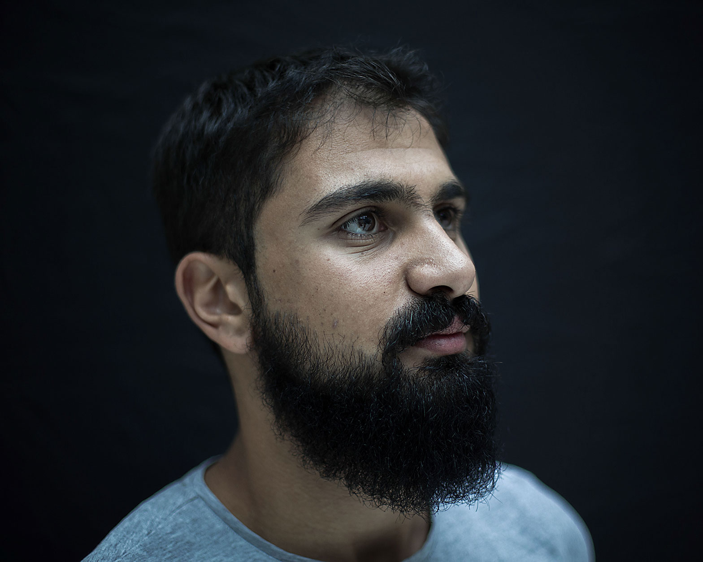
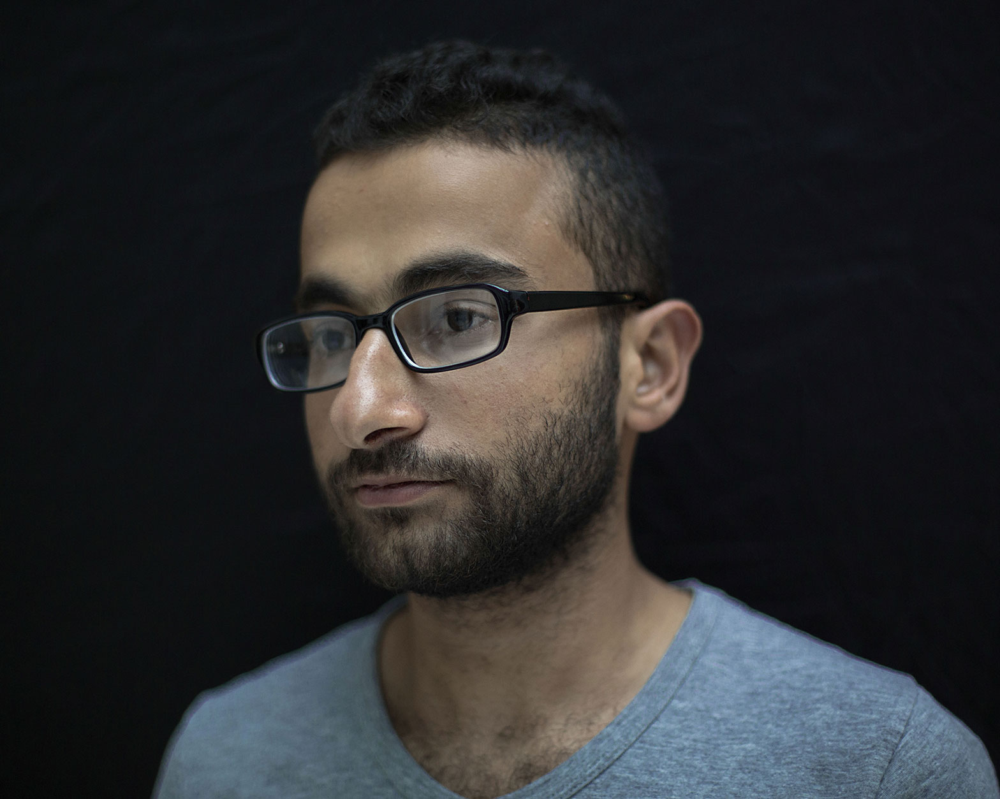
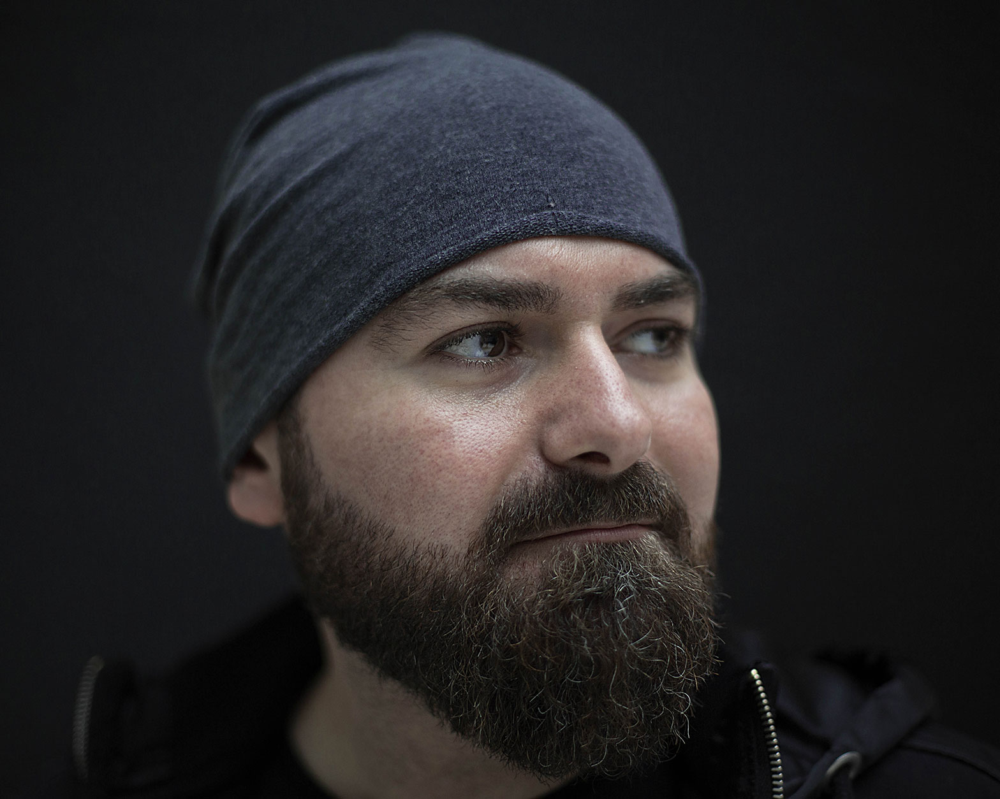
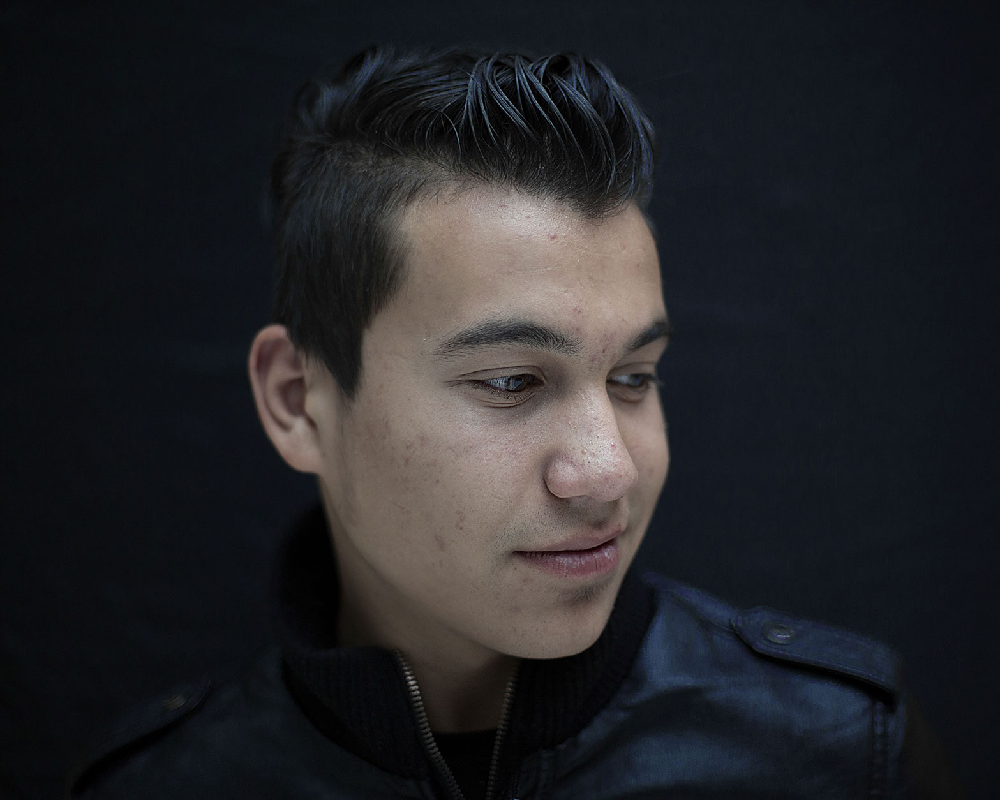
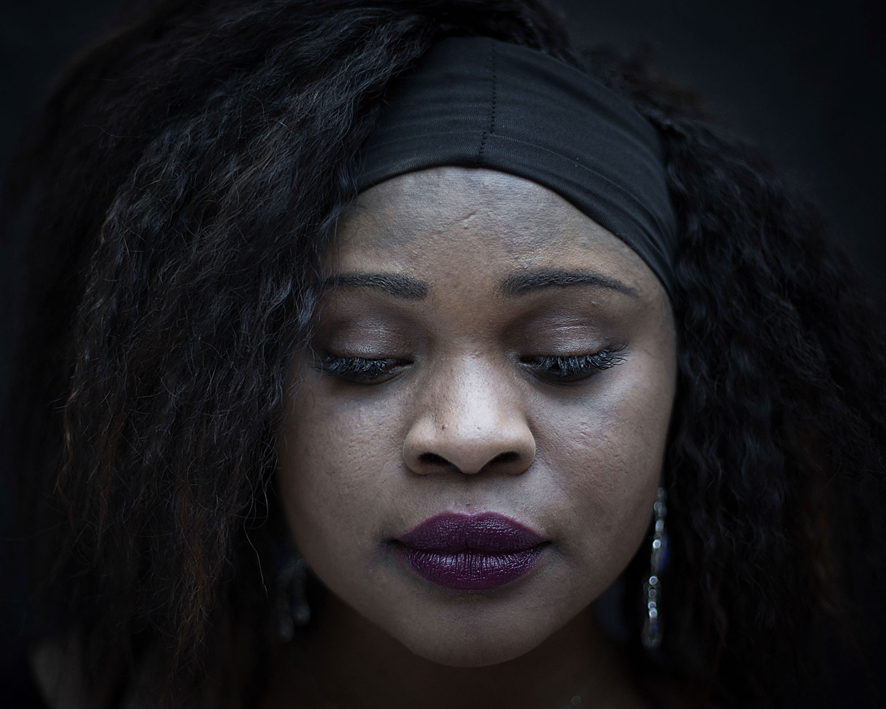
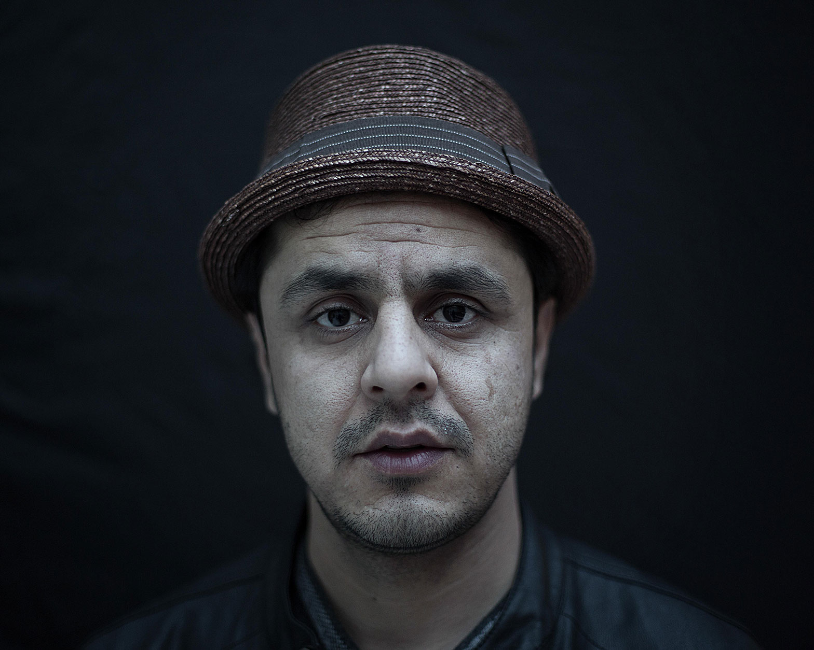

Louis Leeson is a documentary photographer and film-maker. Born on the 1st October 1987 in Hampshire, he is currently based in London where he continues to pursue long-term, personal projects. He studied at the London College of Communication from 2009 to 2012 where he achieved a BA (Hons) in Photojournalism. In 2011 Louis co-founded Lightgeist Media, a documentary film production company, with Patrick Hoelscher.
'ViewFind' featured artist
2015
'Despite the Illusion' featured artist
2014
Human Rights Through the Lens
(Human Rights Watch Film Festival)
Immigrants' Rights & Women's Rights categories
2014
The Ritzy Cinema (Picturehouse)
Film Screening & Print Exhibition
2013
Creative Enterprise Awards
Best New Business Nominee for Lightgeist Media
2012
Portobello Film Festival
Best Film Nominee
2012
Portobello Film Festival
Official Selection for Closing Ceremony
2012
Selection for BFI Next Doc
2012
Atrium Gallery (LCC)
2012
The Ritzy Cinema (Picturehouse)
Film Screening
2011
Save The Children
University Of The Arts London
The Guardian
The Sunday Times
The Daily Mail
The Sun
The Evening Standard
Arts London News
News International
Libya TV
WorldVision
Aangan India
City Screen
Black Swan Publishing
STA Travel